MATLAB Session 2
Contents
Question 3
Multiple plots, maxima, minima and comparators: For t = 0 to 8 and each each signal s1 = 5sint, s2 = 2?t and s3 = 0.4?(1.8t)
a) Plot the 3 signals on the same time axes, use: figure, hold, plot(t, s# , ?colour letter? ) and/or plot(t,[s1; s2; s3])
t = 0: .01 : 8; % t=linspace(0,8,1000) y1 = 5*sin(t); y2=sqrt(t); %y2=t^0.5; y3=0.4*(1.8*t).^0.5; %y3=0.4*sqrt(1.8*t); figure plot(t,y1); hold on; plot(t,y2); plot(t,y3) figure plot(t,[y1;y2;y3])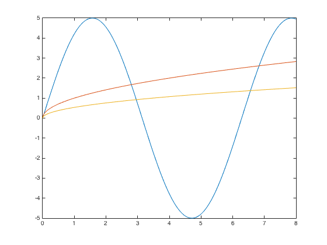
b) >>max(s#) , min(s#) % Confirm the maximum and minimum values
c) >>plot(t , s#>=2) and explain the output
hold on plot(t,[y1;y2;y3]>2)% binary output 0 false, 1 true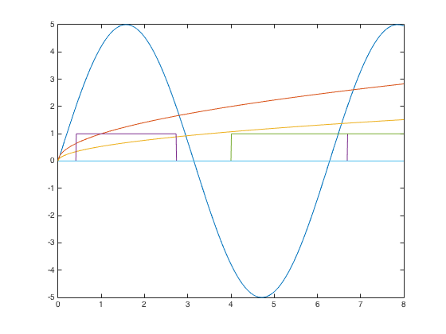
d) >>plot(t , s#.*(t>=2)) and explain the output
plot(t,[y1;y2;y3].*([t;t;t]>=2))%turn on at t>=2;
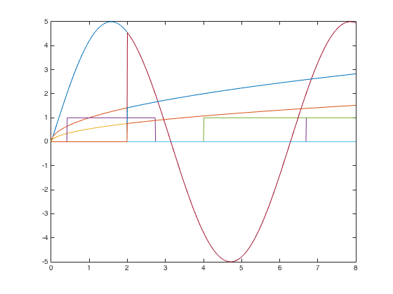 Question 4
The roots of a polynomial f(x) are the values of x, such that f(x) = 0. Obtain the roots of the following polynomials:
a) 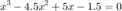
F1=[1 -4.5 5 -1.5];
root=roots(F1) %3 real roots (0.5, 1, 3)
root =
3.0000
1.0000
0.5000
b)
F2=[1 -7 40 -34];
root=roots(F2) %2 complex roots (1, 3+- 5i)
root = 3.0000 + 5.0000i 3.0000 - 5.0000i 1.0000 + 0.0000i
Question 5
Plot the above polynomials to confirm if the roots were located correctly by
a) calculating 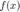 using array operators for x=[-10:0.2:10]; then plot(x,f)
x= -10:.2:10 ; f1=x.^3 - 4.5*x.^2 + 5*x -1.5; f2=x.^3 - 7*x.^2 + 40*x -34;
b) using polyval(), e.g. plot(x,polyval([1 -4.5 5 -1.5], x))
figure plot(x,[f1 ; f2]) figure plot(x,[polyval(F1,x);polyval(F2,x)]) F=[3 2 -100 2 -7 90]; root=roots(F) x=linspace(-6,6,1000); plot(x,polyval(F,x));
root = -6.1423 + 0.0000i 5.4298 + 0.0000i 0.9630 + 0.0000i -0.4586 + 0.8507i -0.4586 - 0.8507i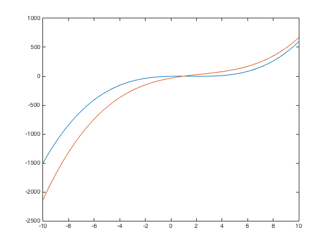 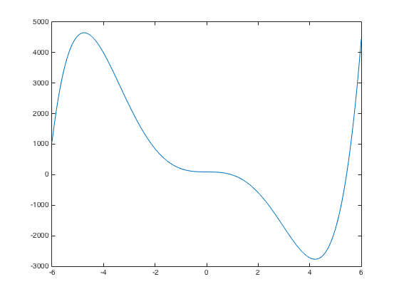
Use Matlab to compute the roots of  and plot the polynomial for x = -6 to 6.
and plot the polynomial for x = -6 to 6.
Question 6
Linear Algebraic Equations: Use the left-division method to solve the following set of linear, algebraic equations, i.e. find u (i.e. [x; y; z]) when Au=y , Hint: A=3x3matrix, v=1x3, >> helpwin ops; >> helpwin mldivide; >> A*u 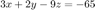 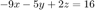 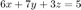
A=[3 2 -9; -9 -5 2; 6 7 3] y=[-65;16;5] u=A\y %2 -4 -9 wrong=A/y' %note difference between this and above check=A*u %check, e.g. 3*2 + 2*-4 + -9*7= 6-8-63=-65 check=A*wrong
A =
3 2 -9
-9 -5 2
6 7 3
y =
-65
16
5
u =
2.0000
-4.0000
7.0000
wrong =
-0.0462
0.1143
-0.0584
check =
-65.0000
16.0000
5.0000
check =
0.6154
-0.2727
0.3480
Question 7
An engineering system has a differential equation with the initial condition solution given by 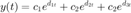 where 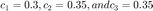 weigh the effects of the roots of the characteristic equation  . Using MATLAB , plot the intitial condition response over the period from to seconds. Determine the maximum response amplitude between 1 and 2 seconds.
. Using MATLAB , plot the intitial condition response over the period from to seconds. Determine the maximum response amplitude between 1 and 2 seconds.
- Extension * (for later): you ay like to learn to write a function witharguments to solve this for any parameters.
t=linspace(0,10,10001); c1=0.3;c2=0.35;c3=0.35; d1=-0.5;d2=-1+5i;d3=-1-5i; y=c1*exp(d1.*t)+c2*exp(d2.*t)+c3*exp(d3.*t); plot(t,y)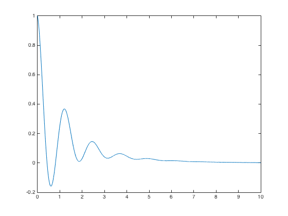